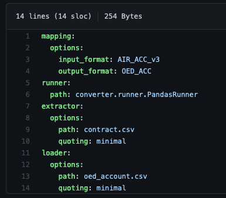

Inputs¶
This section describes the input files you will need to run a transformation.
Configuration File¶
The config file defines the filepath and filename for input files, output files, mapping files and data validation files.
It defines the choice of loader, extractor and runner. The config file is written in .yaml format. One configuration file is required for each transformation: one per account, location, and reinsurance file. Example here and shown below:
{kind=link}
The fields mapping: input_format and mapping: output_format are used to identify which mapping is used in the transformation. The field value must match the value given for input_format and output_format in the mapping files (it does not reference the filename of the mapping file. In this example, the file is set up to transform data from AIR to OED format.
The full path to the mapping file is not required in the config file, and mapping files do not need to reside in the same folder as the config file.
The code will look for the mapping in the same folder as the config file, but also in the local folder ../converter/data/mappings folder - the published files in this folder are for community use and will be installed if the full package is installed and are packaged and downloaded with the .exe. If your local folder containing config files and input data files but does not contain mapping files, the code will search these files for a mapping containing the matching input_format and output_format contained in your config file.
The fields extractor: path and loader: path refer to the source file and destination file, respectively. The fields can accept a full file path, but if the source and destination files refer to locations in the same folder as the config file, only the filename is needed (as shown).
A config file can be used in command line execution, or loaded into the user interface. Alternatively the information can be prepared in the user interface and saved to a text file.
Each runner takes the input data from the extractor, applying each transformation and passing the transformed data onto the loader. A selection of runners is built into the framework: * Pandas, Dask, and Modin. Each handles datasets in different ways and have shown variable performance depending on the size of dataset being transformed (in terms of number of rows _and_ columns). Relative performance will differ according to the specific dataset. Briefly, Pandas will process data on a single core, while Modin and Dask use parallel processing on multiple cores of a local machine. For small datasets, Pandas provides faster transformation but for larger datasets Modin and Dask are likely faster.
When using the Pandas runner, the config requires a value for ‘quoting’. This refers to which types of value Pandas wraps in quotes (“”) when reading and writing csv files. Options are: minimal (the default), all, non-numeric, or none. All will wrap all values in quotes, none will wrap no values. Minimal will wrap any value that contains commas, and non-numeric will wraps all text data but not numeric values. An example of this is shown here.
Input data¶
Flat file input (.csv) or SQL database describing account, location, and reinsurance data.
An example input location file with accompanying config and mapping file is available here.
Mapping files¶
A mapping file describes the conversion between two data formats. They are written as a .yaml text file.
A mapping file can be used to define a forward transformation (e.g., Model A to B) and a reverse transformation (Model B to A).
Multiple mapping files can be used together to define a mapping between a source and destination format that do not appear in the same mapping file. I.e., A mapping file for model A to B and and a mapping file for Model B to C, can be used to transform data directly from A to C.
The mapping file header describes the mapping version, the source and destination formats (and their versions), and information about when and who created the mapping.
The mapping file defines the source field data types and the transformations to be performed. Transformations can copy one field into another, substitute field values using a replace function, or include conditional transformation using a where clause, as in the example below.

Mapping file templates are available in the GitHub project default mappings folder. These are published mapping files, for community use; they can be copied and edited to create your own versions.
By copying and editing these, a user can tailor the mapping for a specific case (a portfolio or user may require a specific match-up of occupancy code in the source and destination formats, which is not used in the default file), or to accommodate a model version update. We encourage you to share new mappings via this GitHub repo (with update headers to describe the new version and your changes).
Mapping file naming should follow this convention mapping_<filetype>_<origin>-<target>_<date yymmdd>_<tag>.yaml, where:
<filetype> refers to account/contract, location, or reinsurance
<origin> refers to the origin data format of the forward transformation
<target> refers to the destination data format of the forward transformation
<date> is the date the mapping was completed or published (yymmdd)
<tag> describes the organisation who published the mapping file, and if relevant the specific client/portfolio it is specifically used for.
For example, mapping_loc_Cede-OED_220124_Oasis.yaml would be a template file developed by Oasis to convert location details from CEDE to OED and mapping_acc_Cede-OED_220124_Oasis.yaml would be the accompanying account mapping file.
For more information on the structure of a mapping file and the operations that can be used, please see these pages:
Data validation definition¶
One validation definition file is required for each input file. These .yaml files describe the data validation fields and values that will be checked before and after the transformation. Validation can be defined to report (for example) sum, max, min or average values by user-defined groupings - e.g., sum of building TIV per occupancy and peril. All field references contained within the file must be the fields relevant to that format.
Validation file naming should follow this convention validation_<format>_<file_full>_<file_short>.yaml, where:
<format> refers to the data format to be validated, e.g., validation_CEDE_Location_loc.yaml
<file_full> refers to ‘Account’, ‘Location’ or ‘Reinsurance’
<file_short> refers to ‘acc’, ‘loc’ or ‘reins’
Portfolio metadata¶
Portfolio metadata is optional information that provides a high-level context about the portfolio being transformed. The metadata includes, for example, the portfolio as-at date, geographic coverage, perils included, and summary of conditions. This is useful for recording the types of portfolio that have been transformed, and has value in understanding what types of data testing has been conducted for, and the success of transformation for different portolio types.